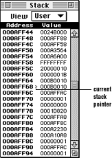
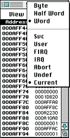

The Stack window displays the current contents of the stack. Optionally, it lets you view the Svc, User, FIRQ, IRQ, Abort, or Undefined stacks in byte, half-word (16-bit), or word (32-bit) format. The current value of the current stack pointer is marked by a down arrow (>) to the right of the associated address.

Figure 1: Stack window.
Working with the Stack window
The following table describes important activities for the Stack window.
Table 1: Working with the Stack window.
--------------------------------------------------------
To... |Do this...
--------------------------------------------------------
Open the window |Press Command-E, or select Stacks from
|the View menu.
--------------------------------------------------------
Edit a stack |* Click on the value you want to change
value |to select it.
|* Enter the new value and press Return
|to write the new value to the target.
--------------------------------------------------------
Stack View options

Figure 2: Stack view options.
Byte
Checking Byte displays data as bytes. This has no effect when you view ASCII data since they are character based.
Half Word
Selecting Half Word displays data as 16-bit words. This has no effect when you view ASCII data since they are character based.
Word
Checking Word displays data as 32-bit long words. This has no effect when you view ASCII data since they are character based.
Svc / User / FIRQ / IRQ / Abort / Undef / Current
To display a specific operating mode's stack (Svc, User, FIRQ, IRQ, Abort, or Undefined), select the desired operating mode from the pop-up menu. To always display the stack of the current operating mode, select Current.